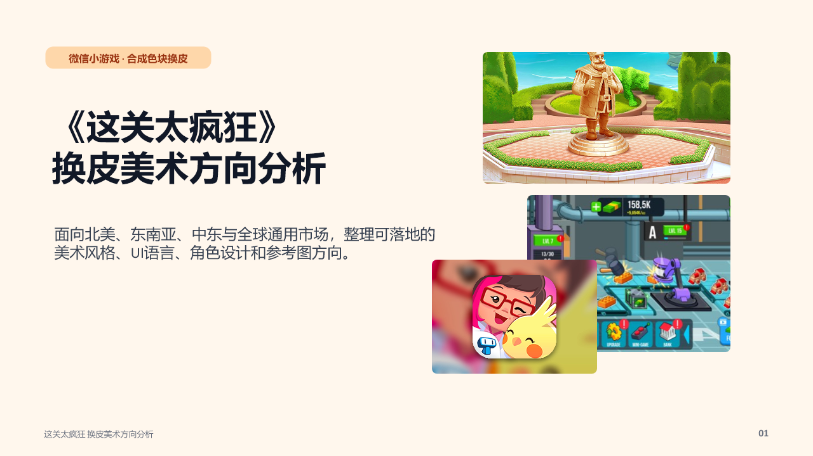
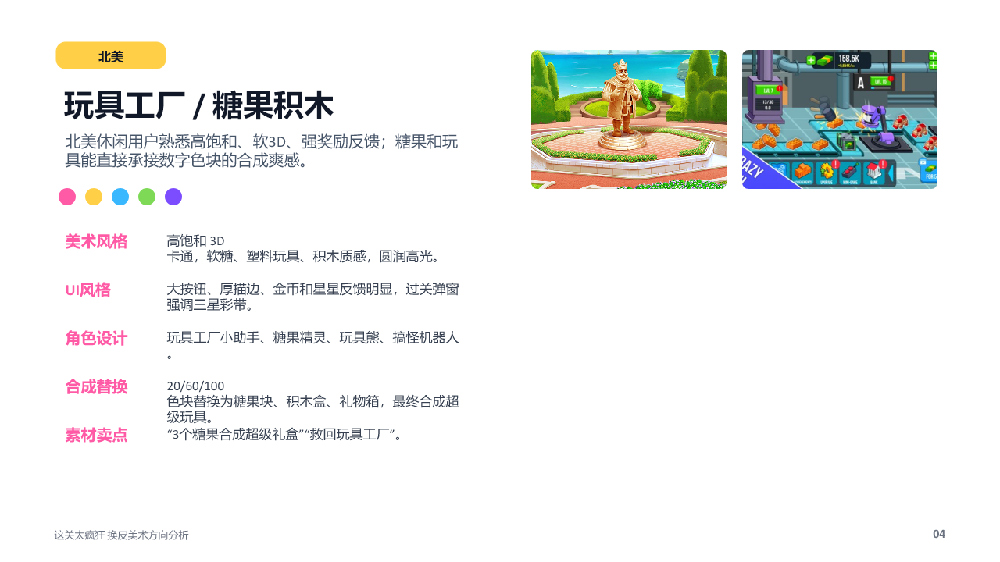
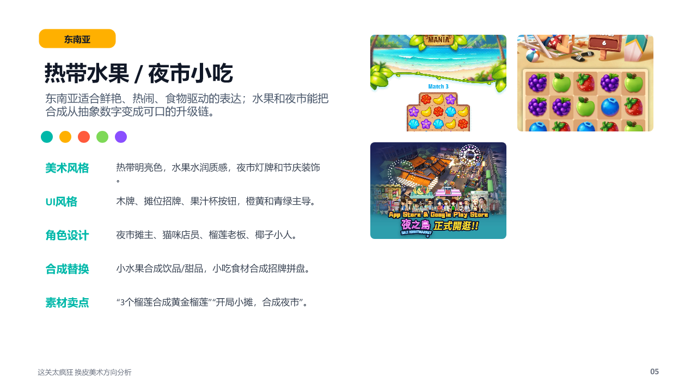
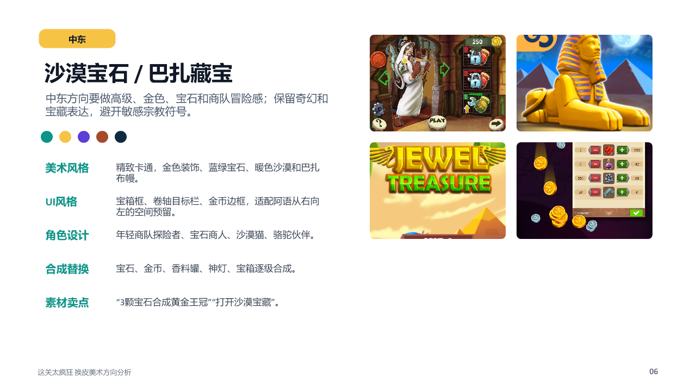
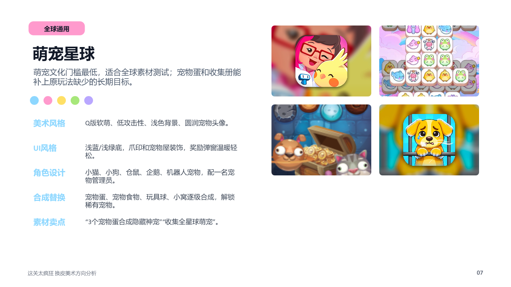

四个换皮方向
同一个“三合一色块合成”内核，可以通过不同物件、角色和UI语言适配不同市场。




推荐落地顺序
先测全球通用萌宠星球文化门槛最低，也方便加入收集册和稀有宠物。
再测北美糖果糖果和玩具是成熟休闲题材，适合高品质买量素材。
地区包后置东南亚夜市和中东宝石适合做区域化皮肤包，降低首版成本。

同一个“三合一色块合成”内核，可以通过不同物件、角色和UI语言适配不同市场。



